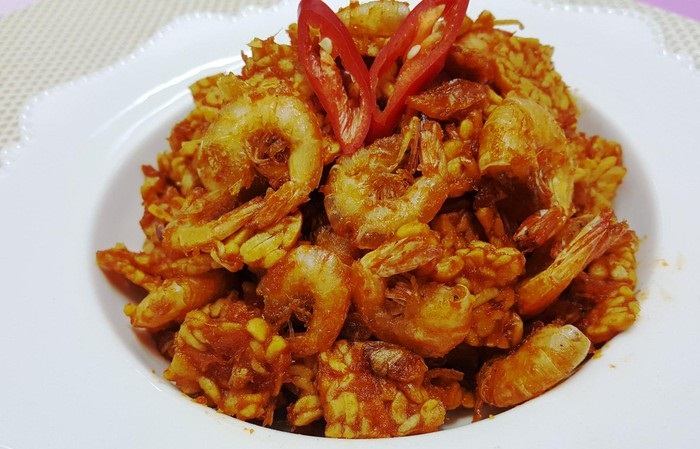

Kering Udang Tempe
Ramadan tinggal beberapa minggu lagi. Resep kering tempe dengan paduan udang kecil yang renyah pedas ini bisa jadi inspirasi sajian santap sahur Anda.
Bahan
- 300 g tempe, iris tipis, potong 3x4 cm
- 250 g udang, buang kepalanya
- 3 sdm bawang merah goreng minyak goreng
- 3 sdm minyak sayur
- 20 g gula merah, iris halus
- 150 ml air
- 7 buah cabe merah
- 5 butir bawang merah
- 3 suing bawang putih
- 1 sdt gula pasir 1 sdt garam
Cara Membuat
- Goreng tempe hingga kering lalu tiriskan.
- Goreng udang hingga kering lalu tiriskan.
- Tumis bumbu halus hingga wangi.
- Tambahkan gula merah dan air, didihkan hingga mendidih.
- Masukkan tempe, udang dan bawang merah.
- Aduk hingga rata.
- Angkat dan dinginkan.
|